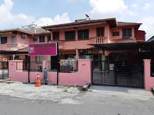

About Us
We are dedicated to supporting orphans and underprivileged children through education, care, and community initiatives.
- The orphanage provides a safe place for children who have lost their parents.
- We provide education and emotional support to help them grow up with love and care
- Every child at this home has access to various activities that enrich their life skills.
- We rely on donations and contributions to cover the costs of food, medical care, and education.
- Our staff consists of individuals skilled in child welfare and providing guidance.
- Psychosocial support programs are run to help children overcome the trauma they have experienced.

Our Projects
Explore our initiatives to provide a brighter future for children in need.
- We believe that every child deserves a chance at a better life, and we are committed to making that a reality for those who have been abandoned or lost their parents.
- Our programs focus on helping children find hope and strength through education, love, and care.
- Each child is encouraged to explore their passions and talents through various learning and recreational activities.
- Your support ensures that our children receive the medical care and nourishment they need to grow strong and healthy.
- Our compassionate team is dedicated to offering guidance and helping the children develop life skills that will prepare them for the future.
- We run specialized programs that help children heal from emotional trauma, fostering their emotional well-being.
Support Us
Your contributions make a real difference. Join us in our mission to transform lives.
- At Rumah Bakti, we offer a nurturing environment for children who have nowhere else to turn, ensuring they grow up in a safe and supportive space.
- We equip children with the tools they need for a successful future by providing them with education, emotional care, and a loving community.
- Every donation helps create opportunities for the children to access a range of activities that build their character and life skills.
- Your generosity allows us to cover essential costs such as food, education, and healthcare for the children.
- Our team of skilled staff members ensures each child receives the guidance and attention they need to thrive.
- Through psychosocial support programs, we help the children heal from past traumas and build resilience for a brighter tomorrow.
Donate Now
|